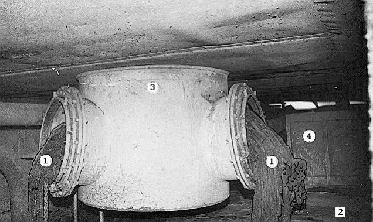

AFAIK, the gov’t said that terrorists had invaded the facility and detonated a nuke.
They forgot to mention the aliens and the fact that US agents were the terrorists.
Quoted for truth. Nuclear reactors are often kept at critical mass to maintain the reaction. Sub-critical mass reactors would eventually shut off. When a reactor is kept at super-critical mass for too long, they just get too hot and begin melting the pressure vessel, and the radioactive moderator starts to leak out. There are no explosions involved whatsoever, although this is still an emergency situation. Reactors, especially a modern one like what there would be at BMRF, have so many safety blankets and redundancy systems built into them now that if a super-critical mass reactor got out of hand, the dampening rods would be inserted and the core would be flooded with coolant instantly. They learned a bit since Three Mile Island and Chernobyl 
Chernobyl did explode though. It just was a steam explosion rather than a nuke explosion.
I know that they can explode, just not nuclear bomb style. Virtually all modern reactors have thick concrete safety domes around the reactor; even if it does explode, the nuclear materials will be more or less contained, and any resulting Corium Lava will simply pool at the bottom of the building and/or solidify, like at Three Mile Island and Chernobyl.

The reactor in Chernobyl had a bad constructure so the steam blast could destroy the roof of the whole building, but I don’t know if this is possible with a dome around the reactor.
Okay after reading up on Chernobyl again I guess Nuke Reactors CAN go asplode, but not to the point of something even remotely close to Hiroshima or wutever. 
The clue is in the name they call it “The black mesa research facility” So thats what it is:|
It is probably a research facility for research into the field of “how to store explosive barrels in the most dangerous fashion”. Looking at some of the screenshots, where barrels are stacked in such a way that it is basically impossible to go through those places without steering wildly from left to right, it really does seem so. 
I have yet to see a game where there are explosive barrels and yet they are NOT placed illogically. “Concerned” comics parodizes this for Half-Life 2 nicely.
I just think black mesa is a super secret laboratory working on secret documents and secret operations inside it and the ppl of the closest city to it think it is a freggin supermarket wich they never saw because was so far from their place, that could explain the logo in the vehicles and when the nuke of the black ops destroyed black mesa how any1 knew where it was the gorvenment said it was a nuke/rocket test to defend the USA from any danger wich could damage it…
in other words: black mesa secret, ppl thinks it’s something wich isn’t a super-secret laboratories without knowing it really is and the government lied about the nuke… well lied 'til the vorts came…
wait a minute the alien maybe didn’t only teleported inside black mesa… because if they got only teleported inside BM they would be all dead by the nuke and in hl2 we can see some groups of vorts, specially in ep 2…
if this is what happened it changes all: the government said the truth to all the ppl then the combine came did a war of 7 hours and won, humanity and vortigaunts were enslaved an everybody (except the humans and vorts) was happy
Your posts are a joy to read, they really are.
There is proof that the public was aware of Black Mesa and the fact that it was a research facility. They had a “Civilian Recruitment Division” and employees were encouraged to recommend friends and relatives to join the Black Mesa team.
Some of the labs would be high security, authorized personnel only, where employees would not be able to discuss their work with people outside of their team.
Also, of course aliens teleported to places other than Black Mesa. They spread across the globe during the portal storms.
There’s more problems with that ‘theory’.
Nuclear tests are now completely illegal, of course. Even underground.
The aliens kept on coming even after Gordon killed the Nihilanth, you should know that.
Some people are ragging on Hollywood-style nuclear explosions from nuclear plants. The thing you have to remember is: An explosion that the movie needs doesn’t have to be nuclear in origin to have the shape of a mushroom cloud. A very large rock from outer space hitting the Earth could cause one. I was boiling water on a stove once and forgot about it until about half the water was gone. I took the lid off the pot and what came out but a “mushroom cloud” of steam.
And, by the way, if you’re looking for realism in movies…
Would there have been much need for a cover story at all, what with the whole 7 hour war and all? Or they could have just said they were a new conventional bomb development site, that had a nuke reactor, and something went wrong, and then went boom (due to a large conventinal bomb) and the reason for the radiation was it blew the crap out of the reactor too.
That’s the most useful post I’ve ever seen you make.
[COLOR=‘Red’]The OP’s question has been very thoroughly answered, and never belonged in the Suggestion Box anyway. Neither does any of the subsequent discussion of nuclear reactor explosions and pointless fanwank about what could have happened in the HL universe to explain the RC. Newsflash: it doesn’t matter anyway because the Combine invaded. Thread Closed.